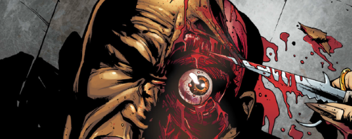

In part inspired by the much earlier Blackhawk, this sees an immortal Roman warrior seeking to confront the goddess of death that has enslaved him.
Art by Paul Davidson
| Story Title | Parts | Pages | w indicates a wraparound coverCovers | Year(s) | Issues | Writer | Artist | Colourist | Letterer |
|---|---|---|---|---|---|---|---|---|---|
| Prologue | 1 | 10 | 0 | 2011 | p2012 | Gordon Rennie | Leigh Gallagher | Dylan Teague | Simon Bowland |
| Blood of the Iceni | 8 | 40 | 1793: Leigh Gallagher 1797: Leigh Gallagher 2 | 2012 | 1792-1799 | Gordon Rennie | Leigh Gallagher | Gary Caldwell | Simon Bowland |
| Quo Vadis, Domine? | 1 | 10 | 0 | 2012 | p2013 | Gordon Rennie | Leigh Gallagher | Gary Caldwell | Simon Bowland |
| Where All Roads Lead | 5 | 25 | 1851: Patrick Goddard & Gary Caldwell 1 | 2013 | 1851-1855 | Gordon Rennie | Patrick Goddard | Gary Caldwell | Ellie de Ville |
| Carnifex | 10 | 50 | 1890: Karl Richardson 1898: Dave Kendall 2 | 2014 | 1890-1899 | Gordon Rennie | Leigh Gallagher | Dylan Teague | Annie Parkhouse |
| Charon's Mercy | 6 | 31 | 1976: Liam Sharp 1 | 2016 | 1973-1978 | Gordon Rennie | Paul Davidson | Len O'Grady | Ellie de Ville |
| Mors Venetiae | 1 | 10 | 0 | 2016 | 2011 | Gordon Rennie | Paul Davidson | Gary Caldwell | Simon Bowland |
| The Burning Fields | 8 | 41 | 2174: William Simpson 2180: Cliff Robinson & Dylan Teague 2 | 2020 | 2174-2181 | Gordon Rennie | Patrick Goddard | Pippa Bowland | Jim Campbell |
| year | episodes | pages |
| 2001 | 0 | 0.0 |
| 2002 | 0 | 0.0 |
| 2003 | 0 | 0.0 |
| 2004 | 0 | 0.0 |
| 2005 | 0 | 0.0 |
| 2006 | 0 | 0.0 |
| 2007 | 0 | 0.0 |
| 2008 | 0 | 0.0 |
| 2009 | 0 | 0.0 |
| 2010 | 0 | 0.0 |
| 2011 | 1 | 10.0 |
| 2012 | 9 | 50.0 |
| 2013 | 5 | 25.0 |
| 2014 | 10 | 50.0 |
| 2015 | 0 | 0.0 |
| 2016 | 7 | 41.0 |
| 2017 | 0 | 0.0 |
| 2018 | 0 | 0.0 |
| 2019 | 0 | 0.0 |
| 2020 | 8 | 41.0 |
| 2021 | 0 | 0.0 |